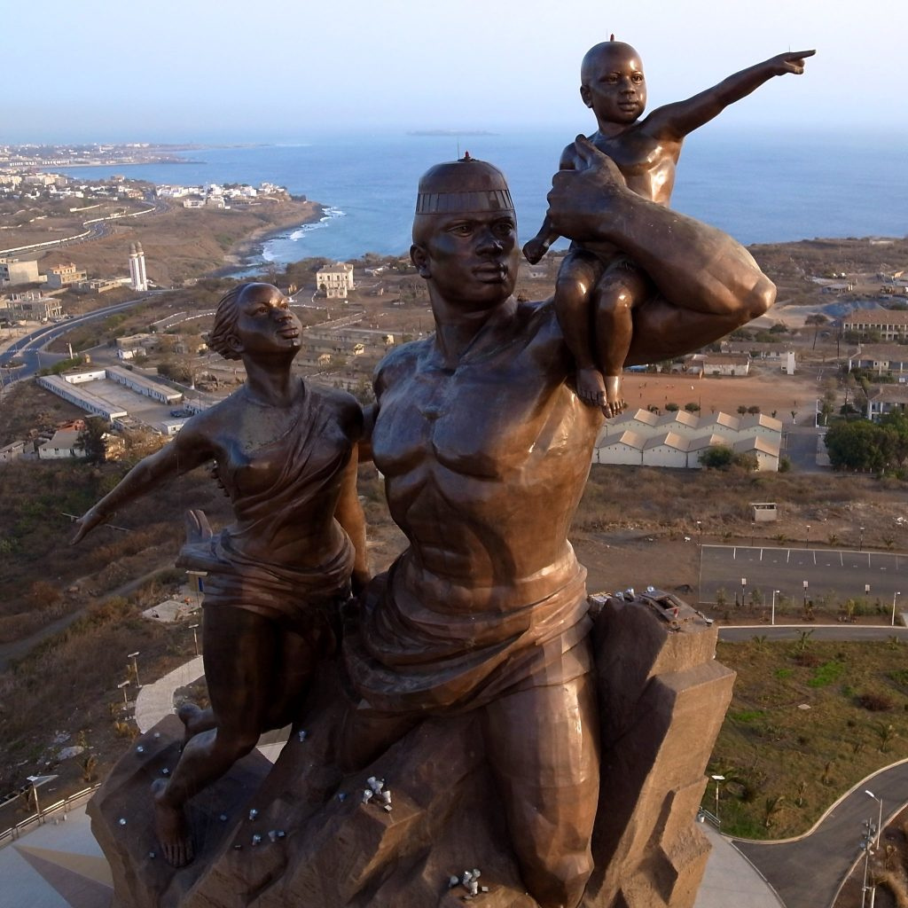

DAKAR: Monument de la renaissance africaine
Description
Haut de 52 mètres et réalisé en cuivre, le monument représente un homme aux muscles saillants jaillissant du cratère d’une des collines des Mamelles. Torse nu, il porte sur son bras gauche un enfant tout en enveloppant de l’autre, une femme. On y accède par un grand escalier de 198 marches L’homme, la femme et leur enfant feront face au soleil, symbolisant l’ouverture du continent au reste du monde. C’est une force de propulsion et d’attraction dans la grandeur, la stabilité et la pérennité de l’Afrique », explique le président Wade
Monument de la renaissance africaine
A Découvrez l’intérieur du Monument de la Renaissance a Dakar

Informations pratiques Adresse : Nouvelle route des Mamelles, Dakar. Horaires des visites : Tous les jours de 9h à 19h45 Tarifs : Résidents : Enfants : 500 F CFA Adultes (visite simple) : 1000 F CFA Adultes (visite belvédère) : 3000 F CFA Non résident : Enfants : 3250 F CFA Adultes : 6500 FCFA
Contacts et adresse Contact : Route de Ouakam – Email : monuraf@gmail.com Téléphone : (+221) 77 939 61 79 / 77 962 32 23 / 30 118 3674